A desktop reader for Markdown
md-viewer opens a .md file and shows it the way a good read-later app shows an article.
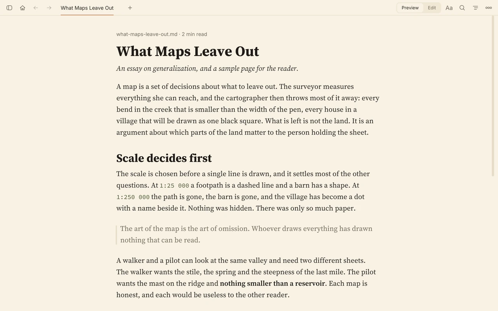
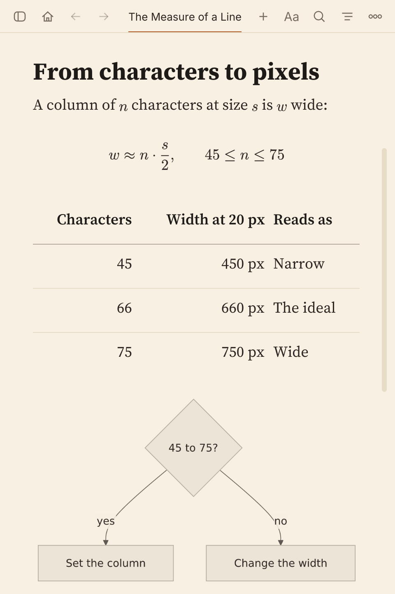
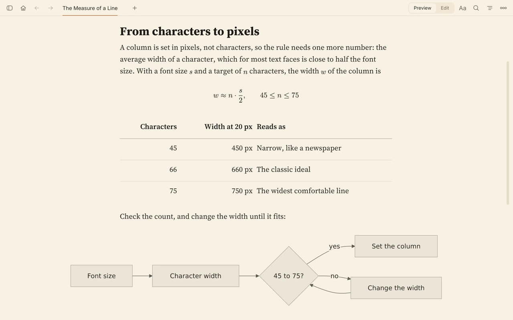
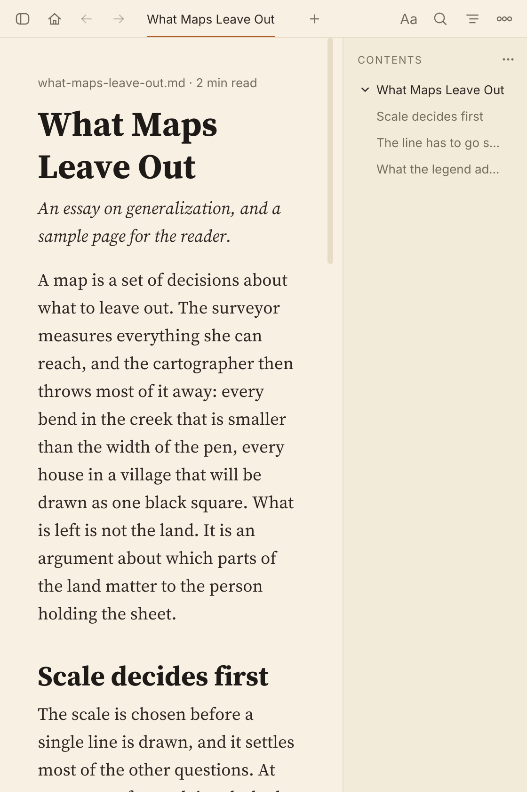
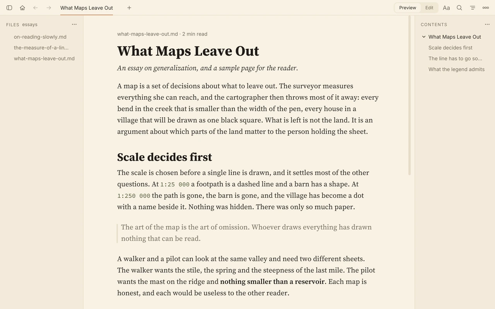
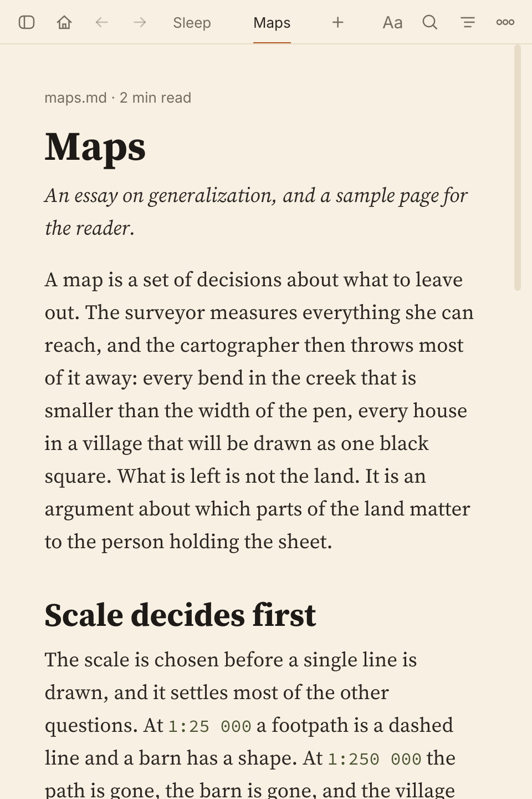
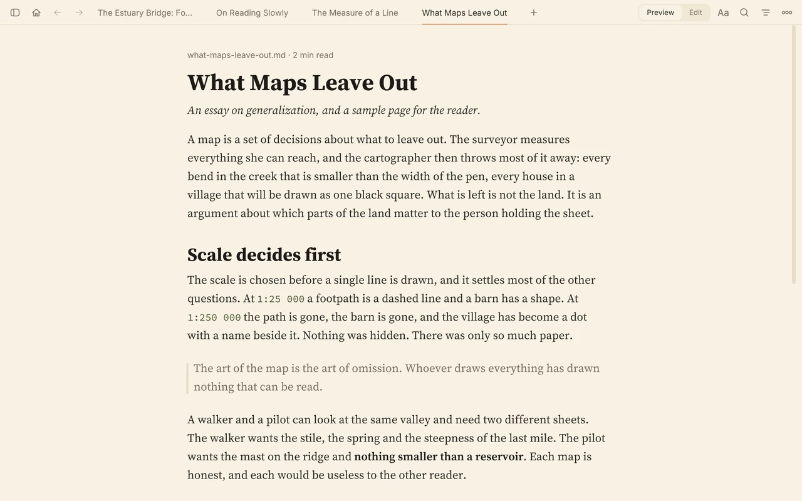
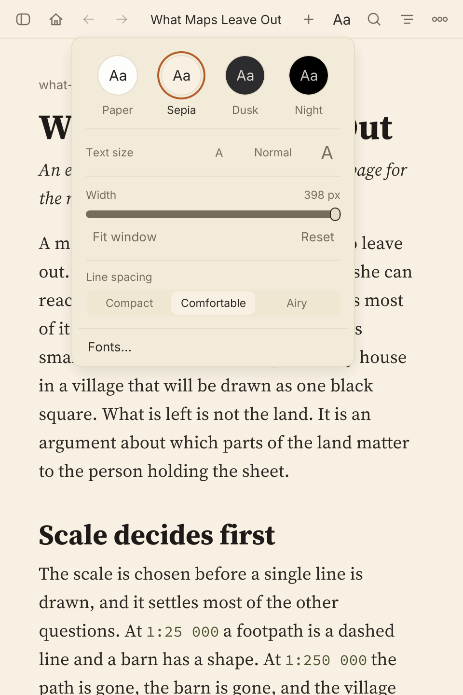
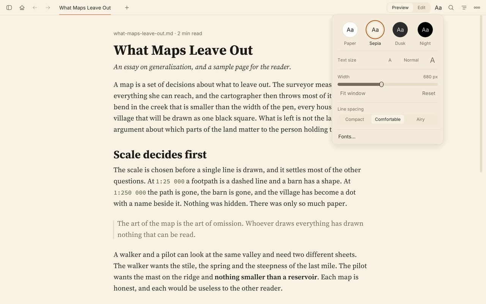
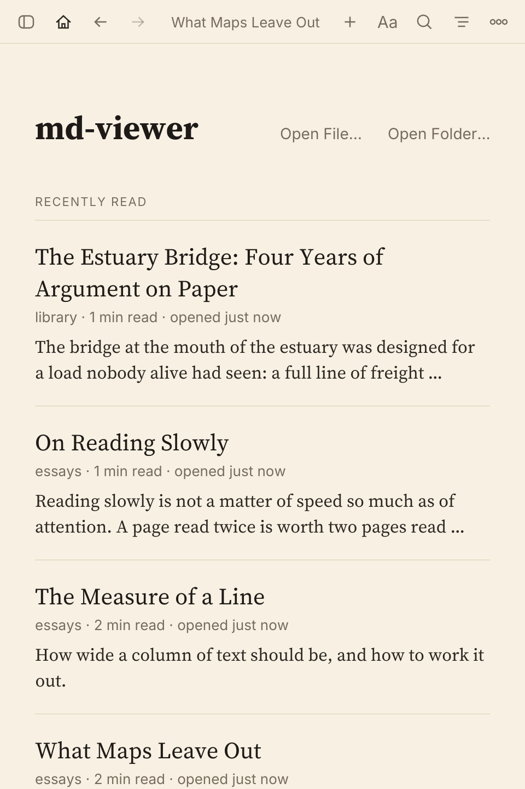
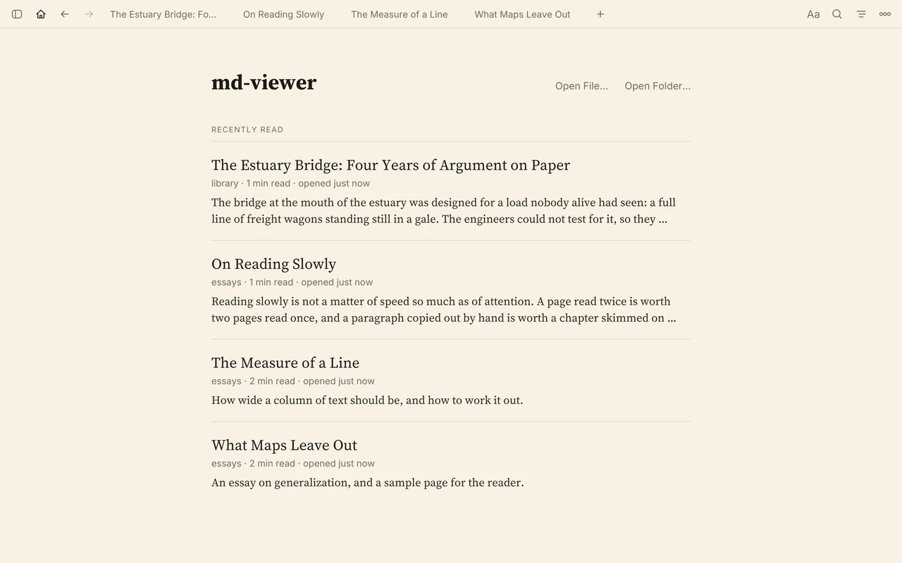
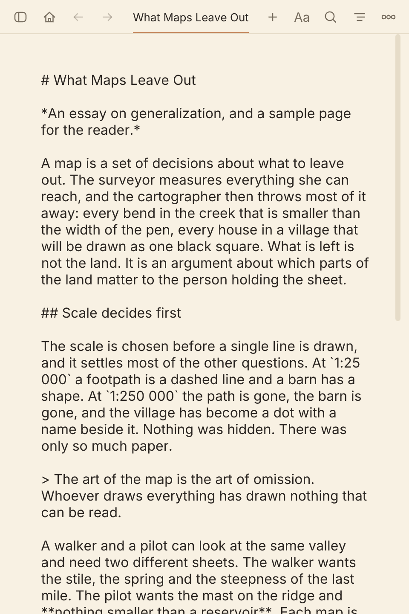
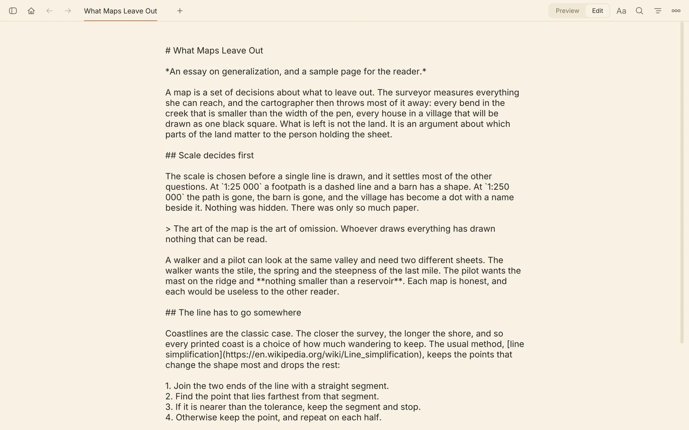
A centered column of serif text on one sheet of paper, and nothing else on screen until you ask for it.
LaTeX formulas and Mermaid diagrams are drawn as ink on the page in the theme's own colors.
Tabs sit in the top row, each named by its document's first heading, with back and forward history in each.
The Aa button holds the theme swatches, the text size, a width slider and three line spacings.
The home page lists recent documents with their title, folder, reading time and opening lines.
Ctrl+E shows the source as plain text and Ctrl+S saves; it is for the typo you just noticed.
Four themes
Paper, Sepia, Dusk and Night. Each one is a single palette that every part of the window draws from, and body text keeps at least 7:1 contrast on all four.


- Paper
- Sepia
- Dusk
- Night
Questions
Is it an editor?
No. There is an edit mode (Ctrl+E) that shows the source as plain text and saves with Ctrl+S. It is for the typo you just noticed.
Does it run on a Mac?
CI type-checks the code for macOS and Windows. The reader has not been run on either. Linux on X11 is built and run for every change.
Is there a package?
Not of this reader. Build it from source. The md-viewer on crates.io, the Snap Store and the AUR is the upstream project.
Can I use my own font?
Yes. Other presets and any installed font family are under Aa, then Fonts…
Does it follow the file while I write?
Yes. Live reload is on unless you turn it off.
How long a document can it take?
Tens of thousands of lines scroll less smoothly. The README lists this under known limits, with the others.
Install
From source$ git clone https://github.com/PhillipChaffee/md-viewer $ cd md-viewer $ cargo build --release $ make install
You need a Rust toolchain. The version is pinned in rust-toolchain.toml, and rustup installs it on the first build. make install copies the binary to ~/.local/bin.
The system packages for Debian, Ubuntu and Arch Linux are in the README. The source is at github.com/PhillipChaffee/md-viewer, under the MIT licence.